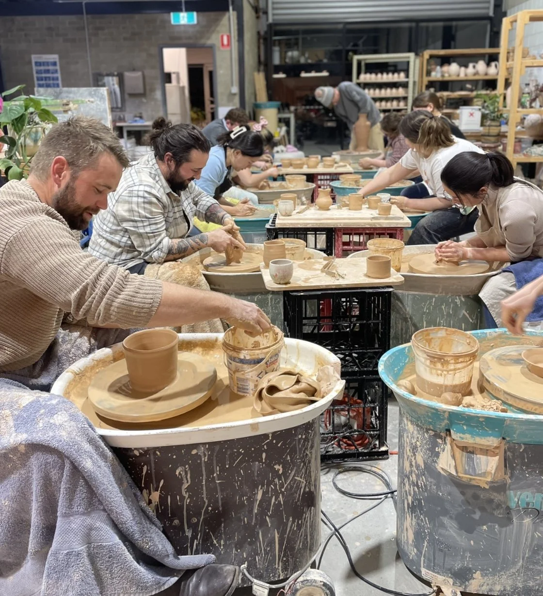
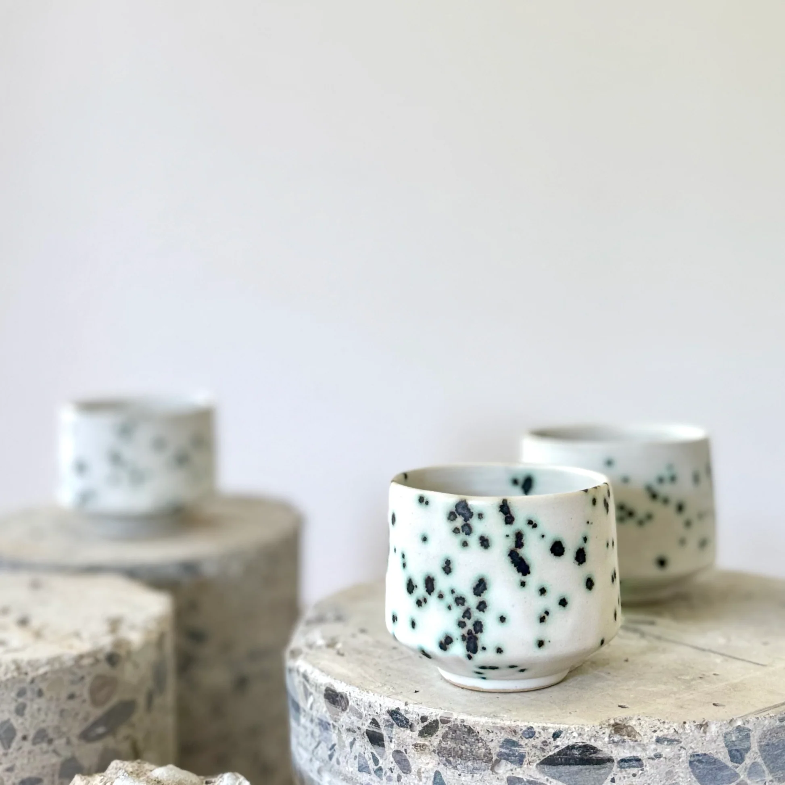

Добро пожаловать в мастерскую
Гончарное дело — это работа с глиной, в которой соединяются ручной труд, внимание к форме и творческий подход. В нашей мастерской можно познакомиться с основными этапами создания керамики и попробовать сделать собственное изделие.
Мы проводим занятия для начинающих, знакомим с инструментами и помогаем освоить работу на гончарном круге. Предварительный опыт не требуется.

Что можно создать
На занятиях участники знакомятся с формой и фактурой будущего изделия. В зависимости от программы можно попробовать сделать:
- чашку или небольшую кружку;
- миску для повседневного использования;
- декоративную вазу;
- небольшую керамическую тарелку.

Расписание занятий
Для знакомства с гончарным делом можно выбрать один из двух вариантов занятия.
| День | Время | Занятие | Уровень |
|---|---|---|---|
| Среда | 19:00–21:00 | Знакомство с гончарным кругом | Начинающий |
| Суббота | 11:00–13:00 | Лепка из глины вручную | Начинающий |
Даты занятий согласовываются при записи. Продолжительность одного мастер-класса — два часа.
Почему работа с глиной интересна
Каждое изделие начинается с простого комка глины. Форма появляется постепенно — благодаря терпению, вниманию и практике.
Гончарное дело помогает изучить свойства материала, почувствовать объём и попробовать себя в прикладном искусстве. Даже небольшая неровность делает ручную работу индивидуальной.
Знакомство с процессом
Посмотрите видео о работе с глиной и создании керамических изделий.
Подробное описание этапов изготовления находится на странице «Как создаётся керамика».
Частые вопросы
Нужен ли опыт для первого занятия?
Нет. Занятия рассчитаны на начинающих. Преподаватель объясняет основные приёмы и помогает во время работы.
Нужно ли приносить собственные инструменты?
Нет. На время мастер-класса предоставляются глина, основные инструменты и рабочее место.
Можно ли забрать готовое изделие домой сразу?
Обычно изделию требуются сушка и обжиг. Возможность и сроки получения готовой керамики обсуждаются на занятии.
Приходите знакомиться с гончарным делом
Выберите удобный формат и оставьте заявку на странице записи.
Перейти к записи на мастер-класс.
Подробнее о материале и способах работы с ним можно прочитать в статье «Керамика» в Википедии.